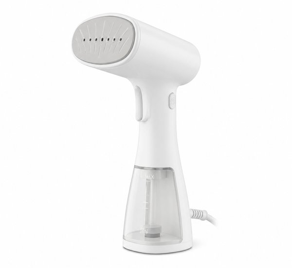
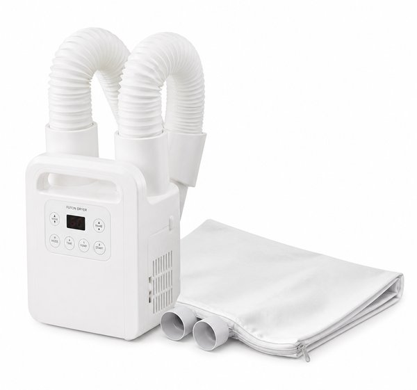
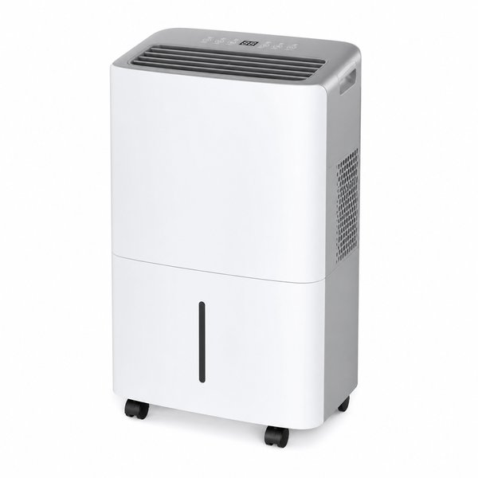
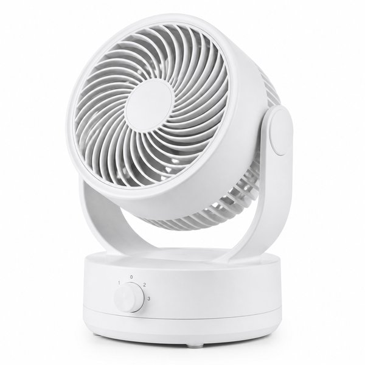
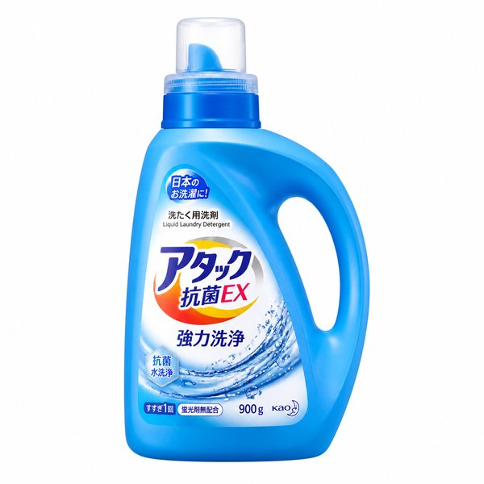
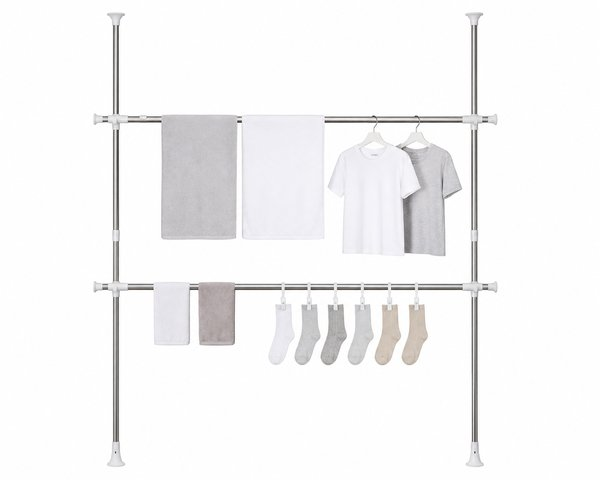
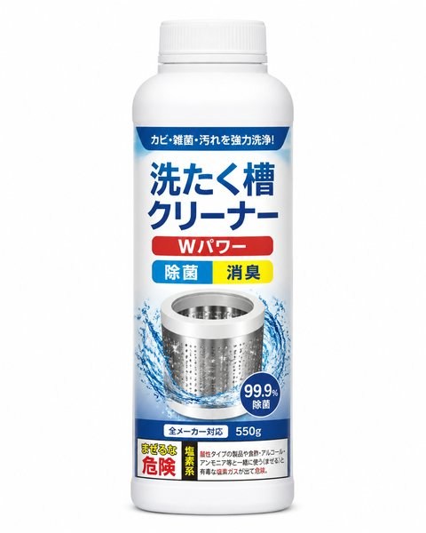
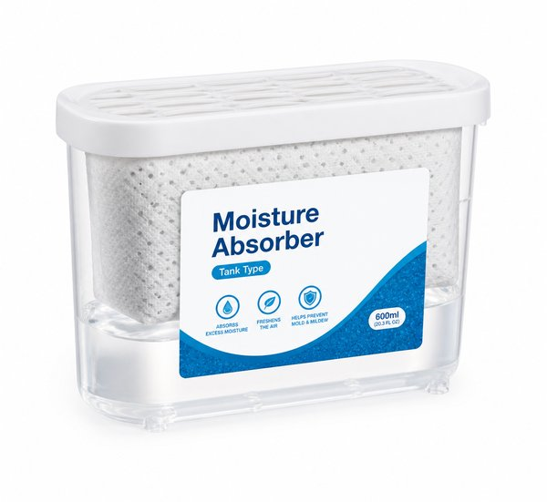
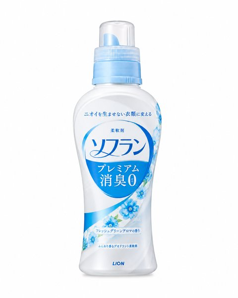

【2026年最新】冬の部屋干し臭・生乾きを一発解消！最強ランドリーグッズ＆衣類乾燥便利アイテム10選
冬の部屋干しは、乾かないうえに臭う。夕方に洗濯して、翌朝には「なんか生乾きのにおいがする」という経験は、共働きの家ではほぼ全員が通る道だと思います。
原因ははっきりしています。気温が低く湿度が高い部屋では、洗濯物の水分が抜けきる前に雑菌が増えるためです。つまり「乾かす速度」を上げる道具を1つ入れるだけで、臭いの8割は消えます。
本記事では、実際に冬の部屋干しと格闘して「これで解決した」と感じたランドリーグッズ＆衣類乾燥アイテムの10選を、写真付きで紹介します。
- おすすめ10選 スペック・特徴比較表
- BEST 1｜衣類乾燥除湿機 カラリエ IJDC-K50 コンプレッサー式
- BEST 2｜衣類スチーマー ニオイ・シワ プレス NI-FS780
- BEST 3｜ふとん乾燥機 カラリエ FK-W2 ツインノズル
- BEST 4｜除湿機 プラズマクラスター CV-P71 コンプレッサー式
- BEST 5｜サーキュレーター PCF-SC15T 上下左右自動首振り
- BEST 6｜アリエール 部屋干し 洗濯洗剤 本体 900g
- BEST 7｜室内物干し 突っ張り 2段 ステンレス 幅52〜82cm
- BEST 8｜ハイター 洗濯槽クリーナー 液体 750ml
- BEST 9｜除湿剤 湿気とり タンク型 3個セット 引き出し・衣類用
- BEST 10｜ソフラン プレミアム消臭 部屋干し 柔軟剤 本体 600ml
- 【読者限定】無料体験キャンペーン
- まとめ：生活をラクにする最初の一歩
| 順位 | 商品名 | ブランド | 最大の特徴・おすすめ理由 | 総合評価 |
|---|---|---|---|---|
| BEST 1 | 衣類乾燥除湿機 カラリエ IJDC-K50 コンプレッサー式 | アイリスオーヤマ（IRIS OHYAMA） | 衣類に直接風を当てる専用設計で、部屋干しが早く乾く | 4.7 ★ |
| BEST 2 | 衣類スチーマー ニオイ・シワ プレス NI-FS780 | パナソニック（Panasonic） | ハンガーにかけたまま使えて、アイロン台が不要 | 4.8 ★ |
| BEST 3 | ふとん乾燥機 カラリエ FK-W2 ツインノズル | アイリスオーヤマ（IRIS OHYAMA） | 布団の内部まで温風が届き、湿気とダニ対策になる | 4.7 ★ |
| BEST 4 | 除湿機 プラズマクラスター CV-P71 コンプレッサー式 | シャープ（SHARP） | 衣類乾燥モードで、部屋干しをまとめて乾かせる | 4.6 ★ |
| BEST 5 | サーキュレーター PCF-SC15T 上下左右自動首振り | アイリスオーヤマ（IRIS OHYAMA） | 上下左右の自動首振りで、洗濯物全体に風が当たる | 4.8 ★ |
| BEST 6 | アリエール 部屋干し 洗濯洗剤 本体 900g | P&G（アリエール） | 部屋干し臭の原因になる菌の繁殖を抑える処方 | 4.7 ★ |
| BEST 7 | 室内物干し 突っ張り 2段 ステンレス 幅52〜82cm | アイリスオーヤマ（IRIS OHYAMA） | 突っ張り式で工具不要、賃貸でも設置しやすい | 4.5 ★ |
| BEST 8 | ハイター 洗濯槽クリーナー 液体 750ml | 花王（Kao） | 洗濯槽の裏側の黒ずみ・菌をまとめて除去できる | 4.7 ★ |
| BEST 9 | 除湿剤 湿気とり タンク型 3個セット 引き出し・衣類用 | 白元（HAKUGEN） | 置くだけでクローゼット内の湿気を吸収してくれる | 4.6 ★ |
| BEST 10 | ソフラン プレミアム消臭 部屋干し 柔軟剤 本体 600ml | ライオン（LION） | 部屋干し臭を抑える処方で、乾くまでの時間が長い冬に向く | 4.6 ★ |
衣類乾燥除湿機 カラリエ IJDC-K50 コンプレッサー式

衣類乾燥に特化したコンプレッサー式の除湿機です。洗濯物の下から風を当てる専用設計で、部屋干しの乾燥時間を大幅に短縮できます。5.0Lの大容量タンクで、共働きで洗濯回数が多い家でも給水の手間が少なく済みます。
- 衣類に直接風を当てる専用設計で、部屋干しが早く乾く
- 5.0Lの大容量タンクで、給水回数が少なくて済む
- 除湿機としても使え、梅雨や結露対策にも回せる
- コンプレッサー式のため、冬の低温時は除湿能力が落ちる
衣類スチーマー ニオイ・シワ プレス NI-FS780

ハンガーにかけたまま、蒸気を当てるだけでシワとニオイを取れる衣類スチーマーです。約20秒で立ち上がり、朝の出がけにシャツ1枚を整えるのにちょうどいい速さ。アイロン台を出さなくていいので、共働きの朝でも使うハードルが低いのが大きいところです。
- ハンガーにかけたまま使えて、アイロン台が不要
- 約20秒で立ち上がり、朝の短時間でシワが伸びる
- スチームでニオイも軽減でき、洗濯回数を減らせる
- タンクが小さく、まとめて何枚もかけると給水が必要
ふとん乾燥機 カラリエ FK-W2 ツインノズル

ふとん袋に温風を送り込んで、布団の内部まで乾かすふとん乾燥機です。冬は布団の湿気とダニが気になる季節なので、週に一度かけられるだけで寝心地が変わります。靴や衣類の乾燥にもノズルを替えて使えるので、雨の日の強い味方になります。
- 布団の内部まで温風が届き、湿気とダニ対策になる
- 靴・衣類・小物の乾燥にも使えるアタッチメント付き
- 冬の寝床が温かくなり、暖房の設定温度を下げられる
- 運転音がそれなりにあるため、夜間の使用は注意
除湿機 プラズマクラスター CV-P71 コンプレッサー式

除湿とプラズマクラスターを両立した、部屋全体向けの除湿機です。衣類乾燥モードで洗濯物に風を当てられ、脱衣所や洗面所のカビ対策にも使えます。タンクが大きく、連続排水ホースも付けられるので、毎日回す家ほど手間が減ります。
- 衣類乾燥モードで、部屋干しをまとめて乾かせる
- プラズマクラスターで部屋のニオイと浮遊菌もケア
- 連続排水ホース対応で、タンクの水捨てが不要になる
- 本体が大きく重いため、階をまたいでの移動は大変
サーキュレーター PCF-SC15T 上下左右自動首振り

上下左右に自動で首を振る、部屋干しの強い味方です。洗濯物の下に置いて風を当てると、空気がよどんでいる場所と比べて乾く速さがはっきり変わります。静音モードがあり、寝室や在宅作業中でも気にならない程度の音で回せます。
- 上下左右の自動首振りで、洗濯物全体に風が当たる
- 静音モードがあり、夜間や在宅中でも使いやすい
- 5,000円前後と手頃で、最初に買う1台にちょうどいい
- 暖房の温風を循環させる用途では、風量がやや物足りない
アリエール 部屋干し 洗濯洗剤 本体 900g

部屋干し特有の菌の繁殖を抑える処方の洗濯洗剤です。汚れ落ちは一般的な液体洗剤と同等で、乾ききるまでの時間が長い冬の部屋干しでも、においが出にくくなります。除湿機と併用すると、洗剤だけ、機械だけのときより明確に効果を感じられます。
- 部屋干し臭の原因になる菌の繁殖を抑える処方
- 汚れ落ちは通常の液体洗剤と同等で、普段使いしやすい
- 詰め替え用もあり、続けてもコストが抑えられる
- 洗剤単体では乾燥時間は短縮されないため、風通しは別途必要
室内物干し 突っ張り 2段 ステンレス 幅52〜82cm

壁と壁の間に突っ張って固定する、2段タイプの室内物干しです。床に置くスタンドと違って足元を占領せず、バスタオルを2段に分けて干せます。設置は工具不要で、賃貸でも壁を傷めにくいのが選ばれる理由です。
- 突っ張り式で工具不要、賃貸でも設置しやすい
- 2段使えて、タオルと小物を分けて干せる
- 足元を占領せず、狭い洗面所や廊下にも置ける
- 耐荷重を超えると落下するため、タオルの枚数に注意
ハイター 洗濯槽クリーナー 液体 750ml

洗濯槽の裏側に付いた黒ずみや菌を落とす、塩素系の洗濯槽クリーナーです。どんなに干し方を工夫しても、洗濯槽が汚れていれば洗った衣類がにおいます。月1回、洗濯槽を空回しするだけで、部屋干し臭の根本原因を断てます。
- 洗濯槽の裏側の黒ずみ・菌をまとめて除去できる
- 月1回の空回しだけで、部屋干し臭の原因を断てる
- ドラッグストアで買える手軽さと価格
- 塩素系なので、使用中は換気とゴム手袋が必要
除湿剤 湿気とり タンク型 3個セット 引き出し・衣類用

クローゼットや引き出しに置くだけで、湿気を吸って水に変える除湿剤です。冬は結露しにくい代わりに、密閉された収納の中に湿気がたまりやすく、そこで衣類が生乾きのにおいをまとってしまいます。水がたまるのが見えるので、交換時期が分かりやすいのも利点です。
- 置くだけでクローゼット内の湿気を吸収してくれる
- 水がたまる量が見えて、交換時期がひと目で分かる
- 1個あたり数百円で、家中の収納に置ける
- 吸湿量には限りがあり、1〜2ヶ月で交換が必要
ソフラン プレミアム消臭 部屋干し 柔軟剤 本体 600ml

部屋干しの生乾き臭を抑える処方の柔軟剤です。洗剤と違って衣類の繊維をコーティングするので、菌が増えにくい状態を保ちやすくなります。香りが強すぎないタイプを選べるのも、家族で使うときに扱いやすいところです。
- 部屋干し臭を抑える処方で、乾くまでの時間が長い冬に向く
- 繊維をコーティングし、雑菌が増えにくい状態を保つ
- 香りが強すぎないタイプを選べ、家族で使いやすい
- 柔軟剤の香りが苦手な人には不向き
日々の暮らしや買い物を楽しむなら、人気雑誌1,000誌以上がスマホやタブレットで読み放題の「楽天マガジン」が圧倒的におすすめです！初回31日間は完全無料で、無料期間中に解約すれば料金は1円もかかりません。
＼ 読者負担0円！雑誌1,000誌読み放題 ／楽天マガジン 31日間無料お試しを詳しく見る →
💡 まとめ：生活をラクにする最初の一歩
冬の部屋干しは、洗剤や干し方を工夫するより「水分を抜く速度」を上げたほうが、はっきり結果が出ます。予算が限られているなら、まずサーキュレーター、次に衣類乾燥除湿機。この順番で入れると、洗濯物の量が増えても対応できます。しわや花粉が気になる季節は衣類スチーマーを足し、布団や靴まで乾かしたいならふとん乾燥機が1台あると冬がかなり楽になります。
楽天市場では「5と0のつく日」や「お買い物マラソン」などのキャンペーンに合わせて購入すると、ポイント還元が最大化してお得に手に入ります。ぜひチェックしてみてくださいね。